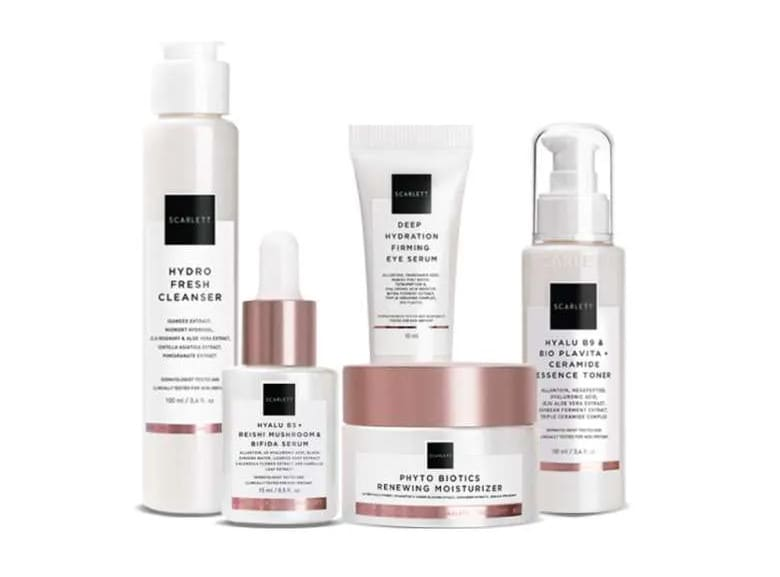
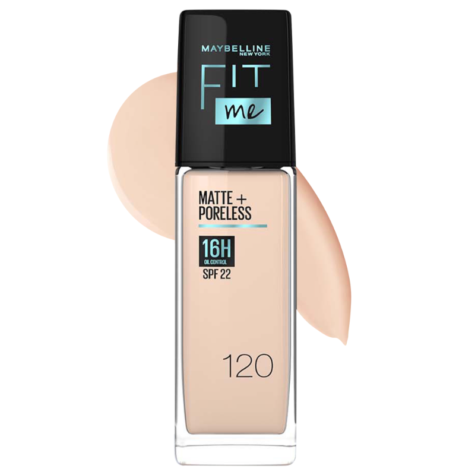
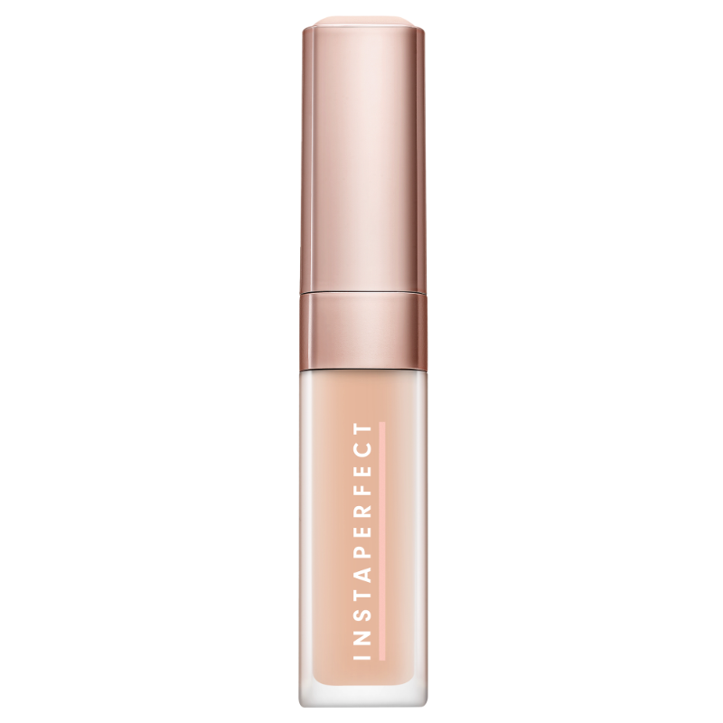
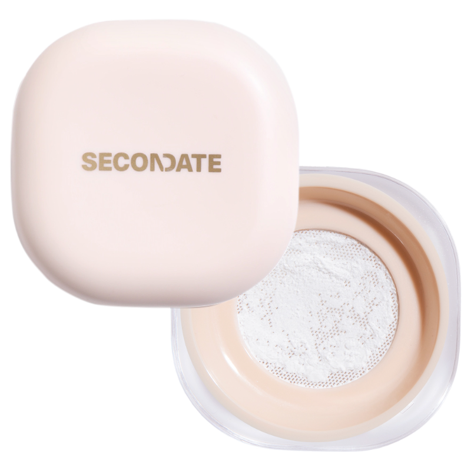
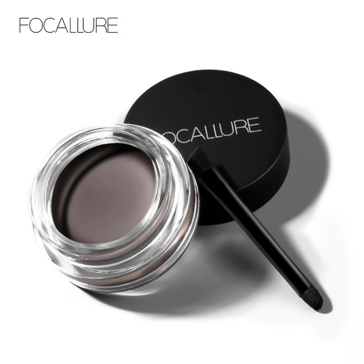
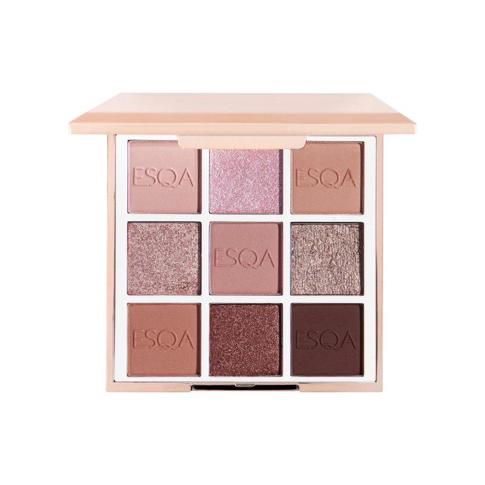
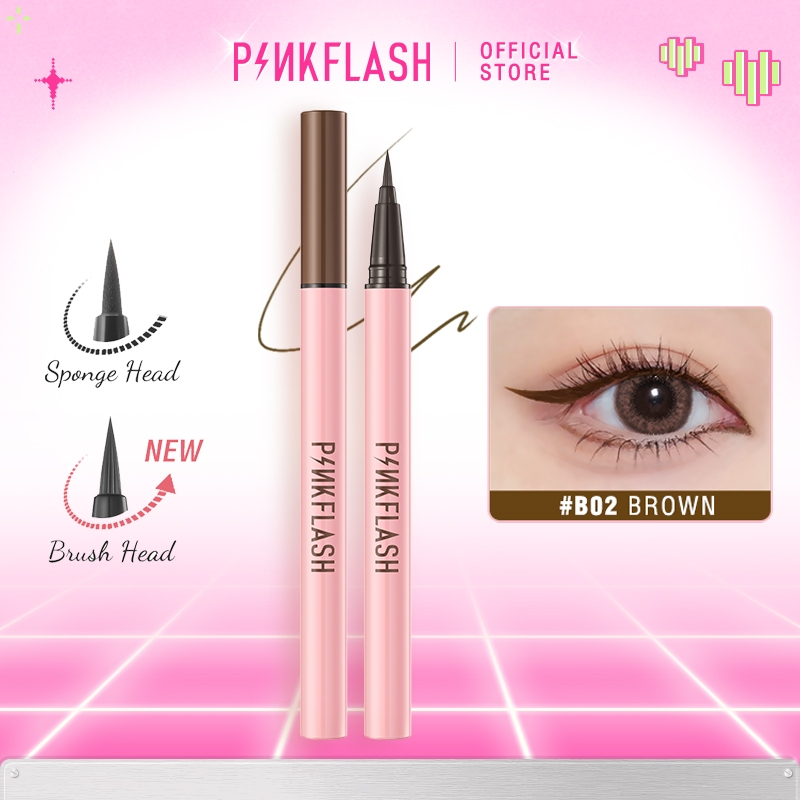
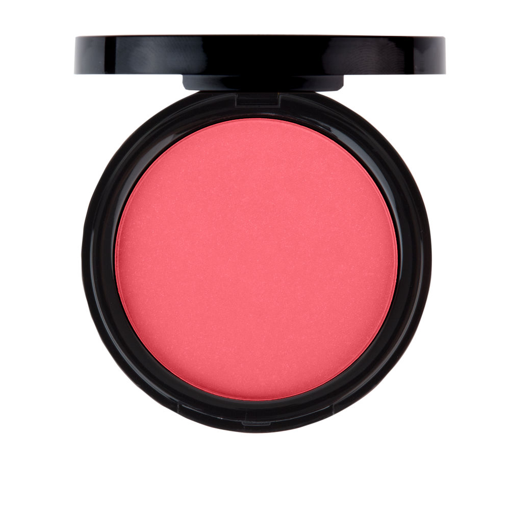
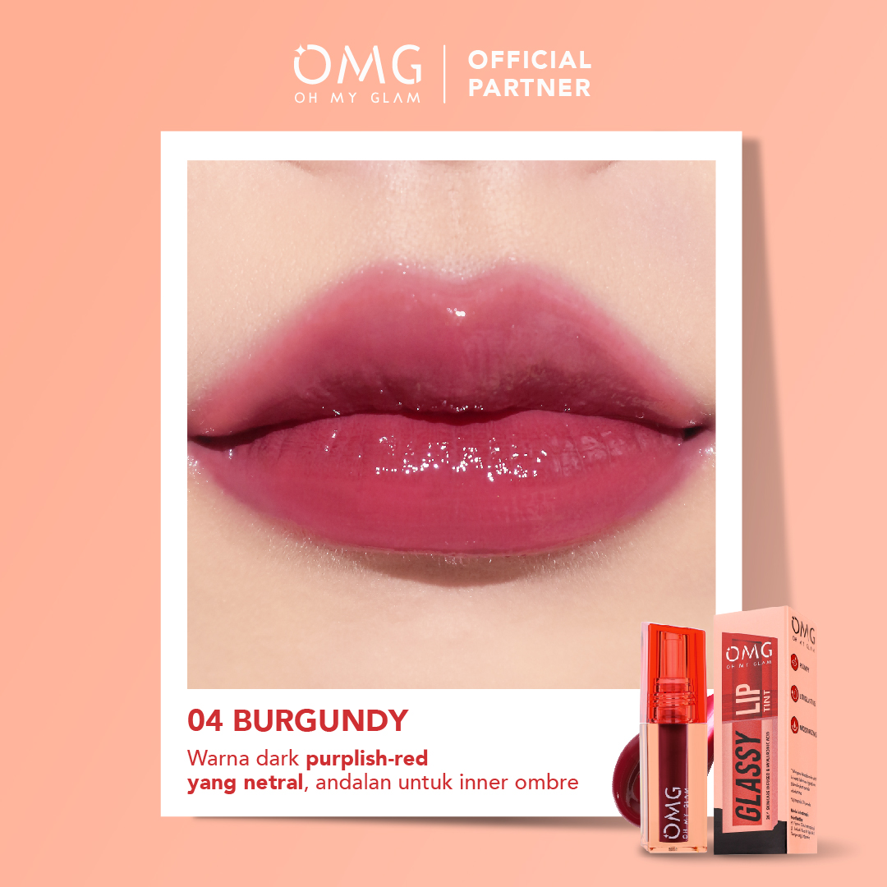

Urutan Langkah Makeup Dasar
Ikuti urutan ini untuk hasil makeup yang flawless. Mulai dari persiapan kulit hingga finishing touch.
Bersihkan wajah, gunakan toner, serum, dan moisturizer. Ini penting untuk base yang halus.

Aplikasikan primer untuk membuat makeup lebih tahan lama dan kulit lebih halus.

Ratakan foundation dengan sponge atau brush untuk coverage yang merata.

Tutupi noda atau dark circles dengan concealer, blend dengan baik.

Set foundation dengan loose powder untuk matte finish.

Gambar alis dengan pencil atau pomade untuk bentuk natural.

Aplikasikan warna netral untuk base, tambah shimmer jika ingin.

Gambar garis tipis di kelopak mata atas.

Panjangkan bulu mata dengan mascara.

Tambahkan warna pink di pipi untuk fresh look.

Berikan glow di tulang pipi dan hidung.

Gunakan lip liner lalu lipstick atau gloss.

Semprotkan untuk lock makeup seharian.